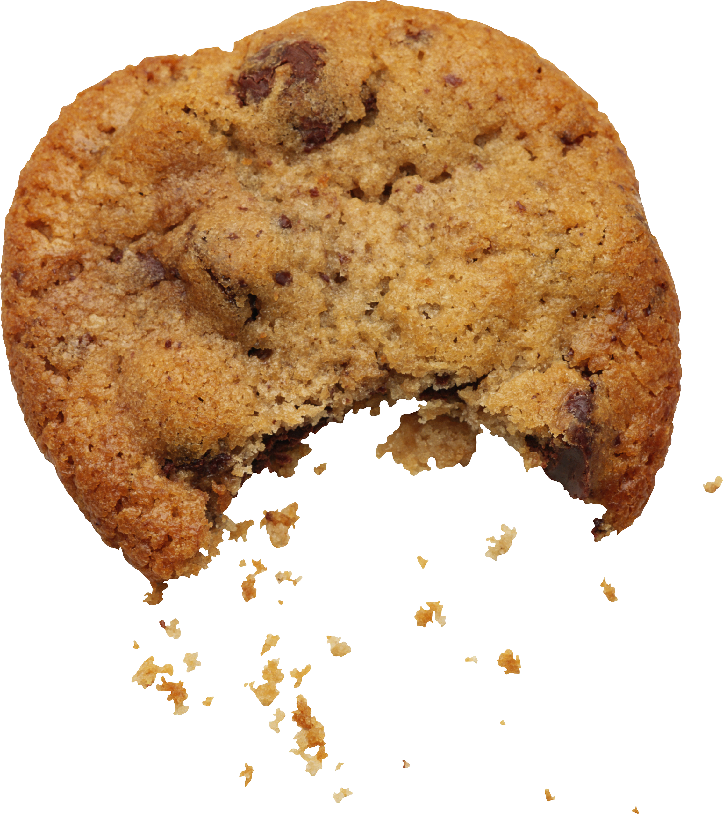
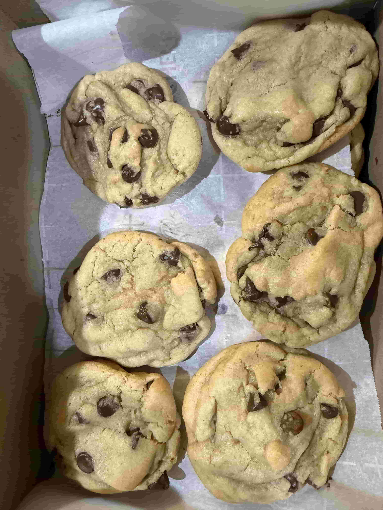

My Recipe
Introduction
Welcome to this mediocre cookie recipe. These cookies will probably taste like a culinary mistake, and look like they were assembled during a minor earthquake. I can’t promise they’ll be edible, let alone enjoyable, but I can promise that a series of questionable decisions and a handful of ingredients will eventually produce something vaguely cookie-shaped.

Ingredients
- 312 grams of all purpose flour
- 226 grams of unsalted butter, softened
- 100 grams of brown sugar
- 50 grams of egg without shell
- 5 grams of vanilla extract
- 5 grams of baking soda
- 4 grams of fine salt
- An entire bag of chocolate chips
Instructions
- Cream the butter and sugars Beat the softened butter, brown sugar, and white sugar for 2–3 minutes until light and fluffy.
- Add egg and vanilla Mix in the egg and vanilla until fully incorporated.
- Add the dry ingredients Whisk together the flour, baking soda, and salt. Stir them into the wet mixture just until combined, then fold in the chocolate chips.
- Chill and portion Refrigerate the dough for 30 minutes. Divide into approximately 24 equal portions and place on parchment-lined baking sheets.
- Bake Preheat the oven to 177°C. Bake for 10–13 minutes, until the edges are golden and the centers remain slightly soft. Cool on the baking sheet for 5 minutes.
- Boil a ½ cup of milk and enjoy your probably pretty mediocre cookies

(This is what mine looked like!)